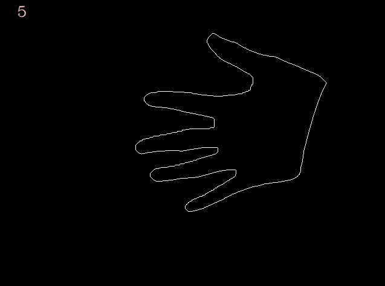

The goal of our project is to track the motions of a hand through the use of computer vision, specifically openCV.
The gesture(s) that we are detecting is the number of fingers displayed by the hand.
First, we retrieve the image from the camera. We take this image and apply a skin detection algorithm to it. This algorithm detects skin based off of a series of relationships between the RGB values of each pixel. The pixel values of the output image of this function are initially set to black. For each pixel of the input image that falls within a range that is considered human skin, the function will change the value of that pixel to white. The result is a binary image where only the skin is visible.
The image that results detects skin, but it also has some noise in the background which could affect the gesture tracking/recognition. So, we apply an erosion followed by a dilaton. Erosion will take the minimum pixel value of all pixels in a specified portion of the image and replace all pixels in this portion with that value. On the other hand, dilation will take the maximum pixel value of all pixels in a specified portion of the image and replace all the pixels in this portion with that value. Thus, erosion helps to remove noise from the image while dilation helps to define the boundaries of an element in the image. Once we perform these morphological operations, our image is ready to be analyzed.
We then send our image into the trackCount method. First, this method finds the contours of our hand using the findContours method from the openCV library. findContours will store the outline of our hand as a vector of points. We then send this vector to the convexHull method which will return a vector of integer indices. These indices are a subset of contours, specifically the minimal set which contains the set of contour points. That is to say, if we draw a line to each consecutive hull point, we will create an object which contains the entire set of contour points. Also, for each hull value, we calculate the convexity defect. These defects are represented by a 4-element integer vector containing the start and end points of the defect, as well as the farthest point from the hull. These defects are essentially the difference between the set of contour points and the set of hull points. Those contour points that are not a part of the hull points will not “touch” the hull when the hull is drawn. We use these convexity defects as a way of calculating how many fingers are being held up.
Our next step is to draw the convexity defects. First, we check if our defect is at a specific depth. We only want to consider those defects that have a relatively large depth, specifically the defects coming from the center of each pair of fingers. If we considered much smaller ones, we would skew our calculations of the number of fingers.
The next step is to draw the defects. We draw a green circle at the start of the defect (top of the finger), a red circle at the depth of the defect (space between fingers), and another green circle at the end of the defect (top of the following finger). We also draw a line between them. We then calculate the angle between starting point, ending point, and depth of the defect (i.e., the angle created by the two red lines). After some trial and error, we found a range of angles whereby we could constitute both a raised and independent finger. Raised in the sense that it is being displayed by the hand gesture and independent in the sense that is far enough away from other fingers to be considered a separate finger. If the angle falls within this range, we consider it displayed by the gesture and we update a counter telling us how many fingers are displayed. Finally, we draw the contours and hull as well as display the video output including a graphical indicator in the top left corner of the window which displays the number of fingers.
There are a few assumptions we had to make when designing our project. We had to assume that the skin detecting function detected the full range of skin colors. For example, it has a harder time detecting my partner’s hand than mine. Additionally, it detects objects which are not skin, but simply fall into the specified range. We also had to make an assumption about the number of fingers being raised. Since we use angle measures to determine if a finger is raised, we can not detect fingers if they are too close together. In terms of being “raised,” all five fingers could be raised, but with all of them touching each other and our program cannot detect that. Therefore, we assume that the fingers must have some distance between each other in order to be counted.
ResultsOur project does well in tracking our hand gestures and detecting the number of fingers. It quickly recognizes when we change our gesture and does not often falter on the count of fingers. However, there are certain gestures we cannot detect. For example, our program detects a thumbs up as two fingers instead of one. This error occurs because the angle from the rest of the fist to the tip of the thumb and the angle from the thumb to the wrist both fall within the range of angles which constitute fingers. At first, we figured we could have just lowered the upper bound on acceptable angles. However, we saw that the angle from the index finger to the thumb was, on average, much larger than the angle between the rest of the fingers. Thus, if we lowered the bound we would not have detected when five fingers were displayed. Another issue we had was how we would develop our binary image. Originally, we used the threshold function which creates a binary image from a grayscale image. The problem with this implementation is that other objects were easily included into the image and then contours/hulls were drawn around them drastically altering our finger count. Although skin detection produces a better binary image, it is not perfect. We had to place our hand against a black background so that no other objects would be detected as skin. We also had to account for the fact that the number of defects does not align perfectly with the number of fingers. The number of defects between fingers is one less than the number of fingers. For this reason, we always had to increment our counter once more after checking the measures of all the angles. If we had more time, we could have experimented with more motion history based techniques in order to recognize gestures that represent a movement, such as a waving of the hand. We also would have liked to put a bounding box around our hand and measure the length of certain lines against the length of the bounding box. We could have used this ratio as a second factor in determining whether a finger is raised. Or we even wanted to recognize facial gestures. Hopefully we can pursue these objectives in the future.
|  | ||
|